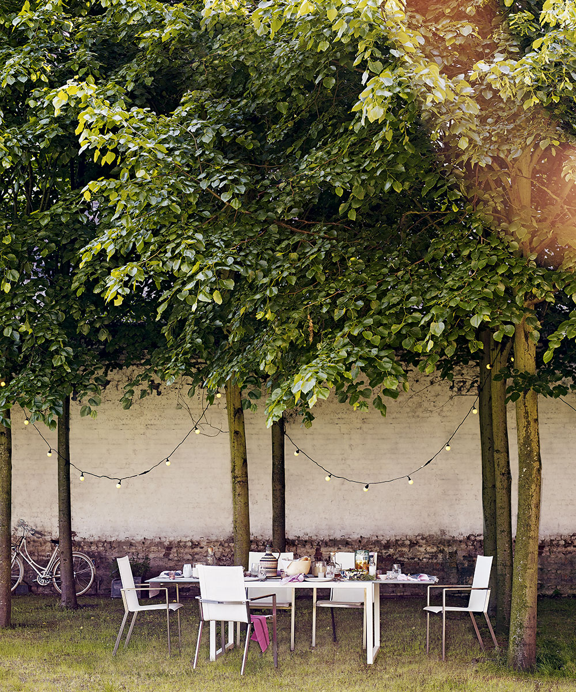

Garden lighting ideas – to illuminate your outdoor space
Gone are the days when the last rays of evening sun signalled a quick retreat indoors as the garden descended into darkness. Today, there are legions of lighting options that allow us to transform what was formerly a foreboding black space into a magical landscape, complete with colour, beams and a variety of effects, whilst also providing safe passage down steps and through pathways.